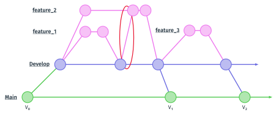

Lire et tenir un dépôt#
Cette partie présente les commandes qui affichent ce que contient un dépôt :
son graphe de commits, la différence entre deux états, et l’état des fichiers.
Elle décrit ensuite le fichier .gitignore, qui liste les fichiers que git ne
doit pas suivre, puis les règles qui gardent un dépôt lisible : les messages
de commit, et l’organisation des branches. Un TD l’accompagne, le TD
6a ; il est présenté en fin de page.
Le graphe des commits#
git log liste les commits de la branche courante, du plus récent au plus
ancien, avec leur identifiant complet, leur auteur, leur date et leur message.
Trois options le rendent plus lisible : --graph dessine les branches et les
fusions, --oneline écrit chaque commit sur une ligne, avec son identifiant
abrégé, et --decorate affiche les noms de branches et de tags à côté des
commits qu’ils désignent.
git log --graph --pretty=oneline --abbrev-commit --decorate
Le TD 3a enregistre cette commande sous un nom court, un alias : git llog. Voici le graphe du projet de la séance à la fin du TD 4c, avec --all
pour afficher toutes les branches :
$ git llog --all
* 4ced033 (HEAD -> develop) Merge branch 'main_code' into develop
|\
| * 6745df8 (main_code) lecture de l'opération avec une regex
| * 29a4b05 commentaire en tête de main.py
* | 4d853e1 (main_code_bis) lecture de l'opération par découpage
|/
* 06b3d3b Revert "suppression du code"
* b6cc6db suppression du code
* 482fb9c Merge branch 'operations' into develop
|\
| * 4a4a187 (operations) ajout des quatre opérations
* | a655591 affichage du titre
|/
* d3c6642 (documentation) description du projet
* 1bab660 (master) ajout du README
Chaque * est un commit, et les traits verticaux relient chaque commit à son
parent, en dessous. Un commit de fusion a deux traits sous lui, |\ ; deux
traits qui se rejoignent, |/, marquent le commit dont deux branches sont
parties. Le graphe se lit donc de bas en haut, dans l’ordre où les commits ont
été faits. Sans --graph, les mêmes commits s’affichent sur une seule
colonne, et les branches ne se voient plus.
La différence entre deux états#
git diff affiche ce qui a changé, ligne par ligne.
Commande |
Ce qu’elle compare |
|---|---|
|
la copie de travail et le dernier commit : les modifications pas encore ajoutées par |
|
la copie de travail et le commit donné |
|
deux commits |
Entre le premier commit du projet et le deuxième, le fichier README.md a
reçu la description du projet :
$ git diff 1bab660 d3c6642
diff --git a/README.md b/README.md
index 19f2362..4b76e7b 100644
--- a/README.md
+++ b/README.md
@@ -1 +1,5 @@
# Geo Calculatrice
+
+Une petite calculatrice en Python, qui fournit des fonctions mathématiques utiles.
+
+
Les lignes qui commencent par + ont été ajoutées, celles qui commencent par
- retirées ; les autres sont reprises telles quelles, pour situer la
modification. La ligne @@ -1 +1,5 @@ donne l’emplacement : la ligne 1 de
l’ancienne version correspond aux lignes 1 à 5 de la nouvelle.
git diff compare des lignes de texte. C’est ce qui fait l’intérêt des
formats texte vus au cours 1 : sur un fichier .py, .md ou .csv, la
différence se lit ; sur un fichier binaire, comme un .docx ou une image, git
affiche seulement que les deux versions sont différentes. Une ligne peut aussi
apparaître modifiée alors qu’elle semble identique à l’écran : elle ne diffère
alors que par des espaces, des tabulations ou la fin de ligne, que le TD 2b du
cours 1 a fait afficher dans l’éditeur.
L’état des fichiers#
git status affiche la branche courante, puis l’état de chaque fichier : non
suivi, modifié, ou prêt à être enregistré. Entre parenthèses, il indique les
commandes qui font passer un fichier à l’état suivant, ou qui annulent une
modification.
$ git status
Sur la branche develop
Modifications qui ne seront pas validées :
(utilisez "git add <fichier>..." pour mettre à jour ce qui sera validé)
(utilisez "git restore <fichier>..." pour annuler les modifications dans le répertoire de travail)
modifié : src/main.py
modifié : src/operations.py
aucune modification n'a été ajoutée à la validation (utilisez "git add" ou "git commit -a")
Ici, deux fichiers suivis ont été modifiés, et ces modifications ne sont pas
dans la zone de préparation. git restore <fichier> rendrait au fichier le
contenu du dernier commit, et perdrait la modification. git status est la
commande à taper avant toute autre quand on ne sait plus où en est le dépôt.
Ignorer des fichiers#
Certains fichiers du dossier de travail n’ont pas leur place dans le dépôt. Un
fichier .gitignore, à la racine du projet, en donne la liste, un nom ou
un motif par ligne. Git ne les affiche plus dans git status, et git add .
ne les ajoute pas.
__pycache__/
build/
img/*.png
.vscode/
Trois sortes de fichiers s’y mettent :
les fichiers produits par une commande, qui se refont à partir des sources : les résultats d’un calcul, le dossier
build/d’une compilation, le dossier__pycache__/que Python crée en exécutant un programme ;les réglages du poste, propres à chaque personne : le dossier
.vscode/de l’éditeur ;les secrets : mots de passe, clés d’accès à un service. Le cours 5 y revient.
Les motifs s’écrivent comme ceux de bash, vus dans la première partie :
img/*.png ignore les images PNG du dossier img. Un nom qui finit par /
désigne un dossier et tout son contenu. Le fichier .gitignore lui-même se
suit dans le dépôt, avec un commit, pour que la règle vaille pour tous ceux
qui récupèrent le projet.
Dans le projet de la séance, exécuter src/main.py crée src/__pycache__/,
que git status liste alors comme non suivi :
Fichiers non suivis:
(utilisez "git add <fichier>..." pour inclure dans ce qui sera validé)
src/__pycache__/
Les règles d’un dépôt lisible#
Un dépôt se relit : pour retrouver quand une erreur est apparue, pour comprendre le travail d’une autre personne, pour revenir à une version. Trois règles le rendent lisible.
Le message de commit décrit ce que le commit modifie : « ajout de la
fonction inv dans operations.py ». Un message comme « corrections » ou «
modifs » ne dit rien, et oblige à ouvrir le diff de chaque commit pour
savoir ce qu’il contient.
Un commit enregistre un état qui fonctionne : le programme se lance, les tests passent. On peut alors revenir à n’importe quel commit et obtenir un projet utilisable.
Les branches suivent une organisation connue de toute l’équipe. La plus répandue, appelée git flow, sépare trois sortes de branches.

master ne reçoit que les versions terminées ; develop réunit les
fonctionnalités ; chaque fonctionnalité a sa branche.#
master(oumain) ne reçoit que les versions complètes du projet, celles qui peuvent être distribuées. Chacune porte un tag.developréunit le travail en cours pour la version suivante. Elle contient toujours une version qui fonctionne, et on n’y travaille pas directement : elle ne reçoit que des fusions.Une branche de fonctionnalité est créée depuis
developpour chaque fonctionnalité à ajouter ; c’est là qu’on travaille. Une fois la fonctionnalité terminée, elle est fusionnée dansdevelop. Sidevelopa changé entre-temps, on la fusionne dans la branche de fonctionnalité, pour travailler sur un état à jour.
Le projet des TD suit cette organisation : develop part de master, et le
travail se fait sur documentation, main_code et operations, fusionnées
dans develop. Le TD 6a fusionne develop dans master et pose le tag de la
première version.
TD de la partie#
TD 6a — Publier une version, 10 minutes : fusionner
developdansmaster, puis poser le tagv1.0sur le commit obtenu.
Les TD des autres parties sont dans Travaux dirigés de la séance 2.